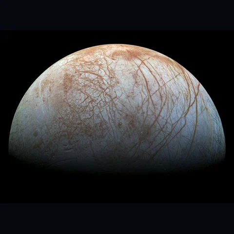
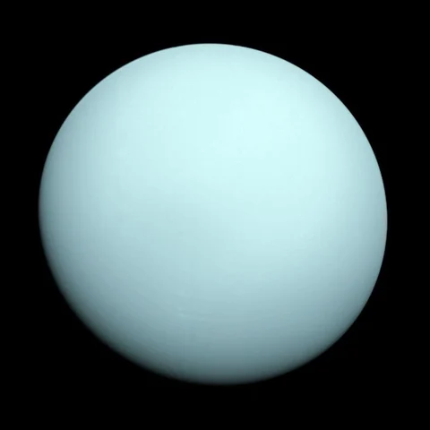
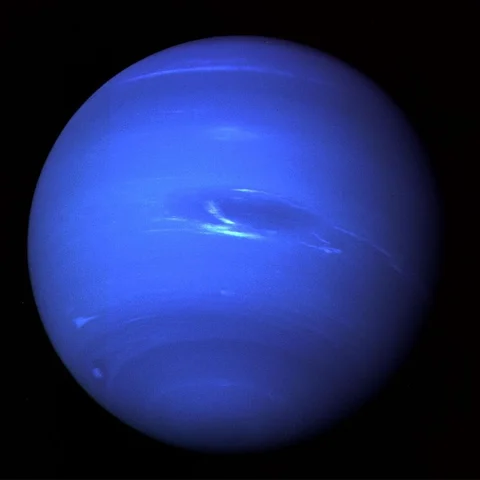
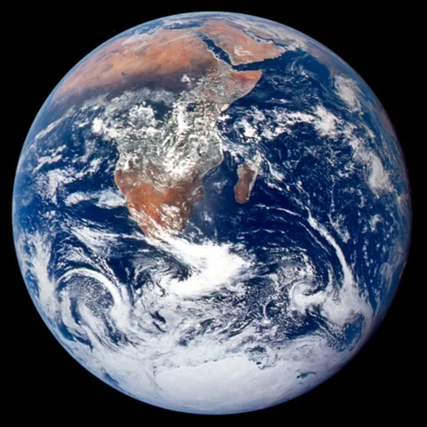
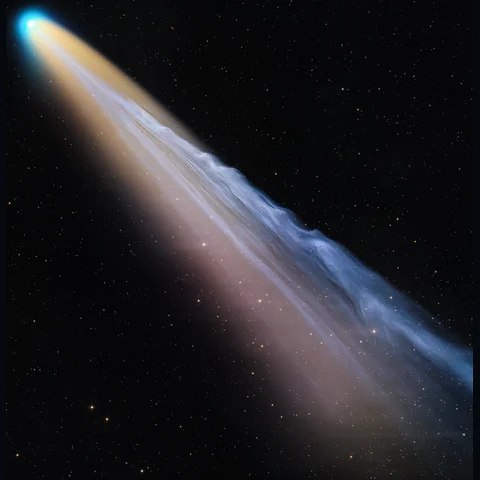

Europa / 木卫二
NASA/JPL-Caltech/SETI Institute · Galileo · PIA19048.
This reprocessed mosaic enhances color differences in the icy surface. It is not a natural-color rendering.
These are photographs or composites of real observations, with no AI-generated imagery or color tinting added here. The theme palettes are design interpretations, not calibrated measurements of each object's color.
所有图片均来自真实观测，没有使用 AI 生图或额外染色。主题配色是设计上的联想，并非天体颜色的精确测量；木卫二与海王星使用增强色影像。

NASA/JPL-Caltech/SETI Institute · Galileo · PIA19048.
This reprocessed mosaic enhances color differences in the icy surface. It is not a natural-color rendering.

NASA/JPL · Voyager 2 · January 14, 1986 · PIA18182.
The pale blue-green planet inspires a brighter green terminal palette.

NASA/JPL · Voyager 2 · 1989 · PIA01492.
The classic Voyager rendering exaggerates Neptune's blue color to reveal atmospheric detail. Its natural appearance is paler and closer to Uranus.

NASA · Apollo 17 crew · December 7, 1972 · The Blue Marble.
A photograph of Earth from the journey to the Moon. The theme retains the existing midnight-blue, gold, and animated night-sky treatment.

Chuck Ayoub · C/2025 A6 (Lemmon) · October 30, 2025.
43 minutes of exposure using a Celestron RASA telescope and a ZWO ASI533MC color camera. Released by the photographer under CC0 1.0.
Images have been resized to 480 × 480 WebP thumbnails with dark padding as needed. NASA image credits are retained above; see NASA's image and media guidelines.